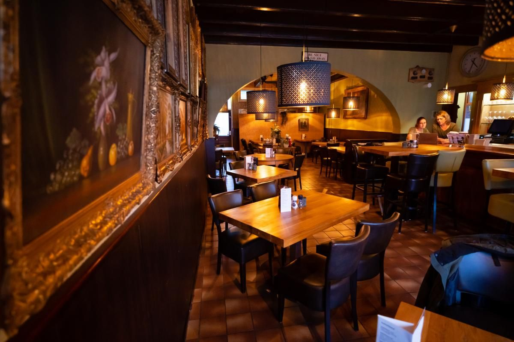
Gezellig eten aan de markt in Wouw
Voor koffie met gebak, een lekkere lunch of een heerlijk diner. Onze specialiteit is malse biefstuk in eigen braadjus, met huisgemaakte verse friet.
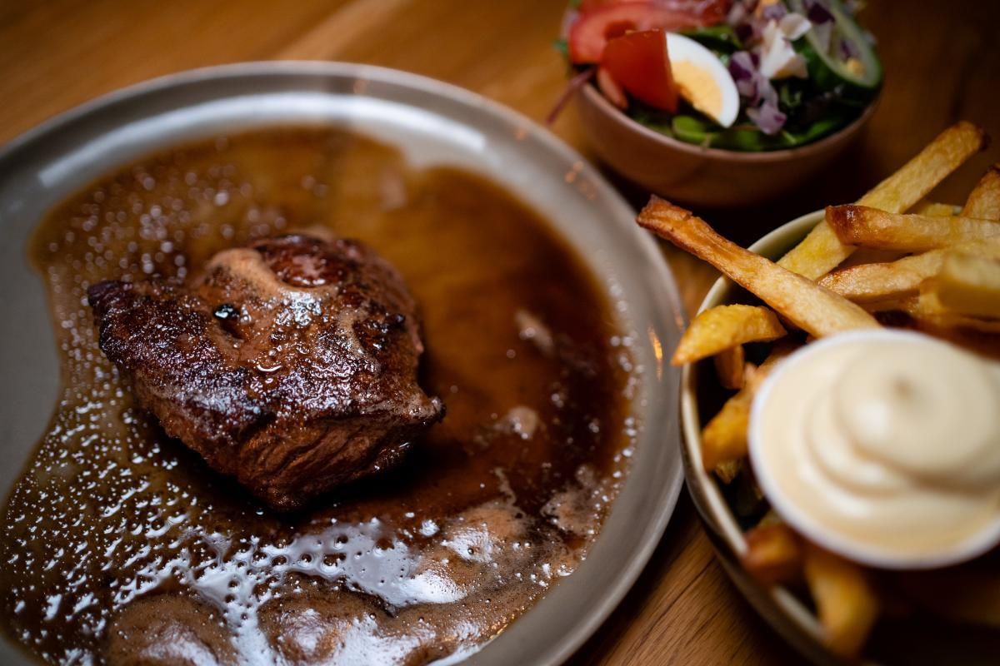
Biefstuk, onze specialiteit
Die moet je geproefd hebben!
Onze biefstuk komt van het Zeeuwse grasland en serveren we in eigen braadjus. Bij al onze hoofdgerechten krijgt u huisgemaakte verse friet en sla.
Ook als lunch: 250 gram met brood voor € 22,50.
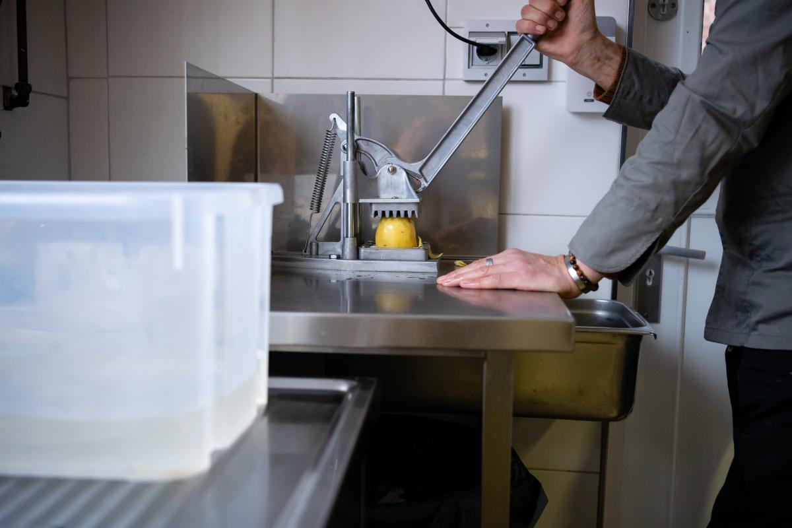
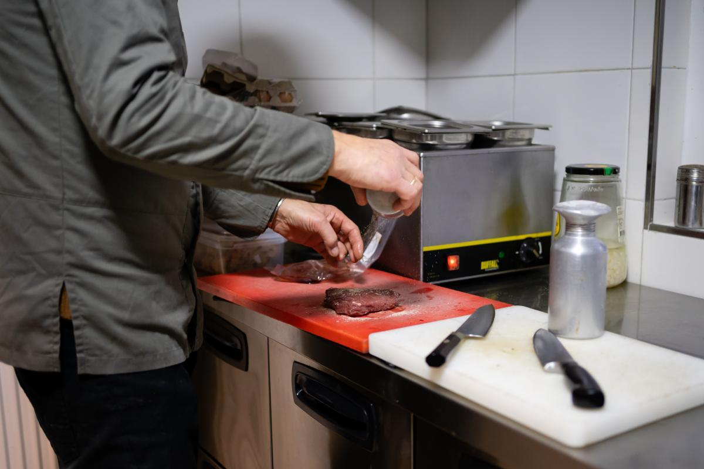
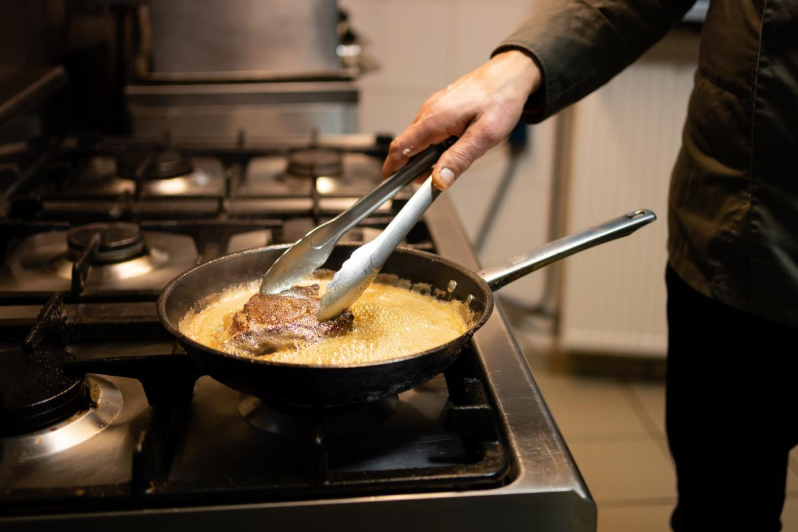
Wat gasten zeggen
★★★★★"Heerlijk gegeten bij De Huiskamer van Wouw! Ik had de steak en die was echt uitstekend bereid en erg smaakvol. Wat ik vooral bijzonder vond, was dat de chef zelf aan tafel kwam om te vragen of alles naar wens was en of het eten goed smaakte."
Abdullah SalehGoogle
★★★★★"Omdat het er kei gezellig is met fantastisch eten dat Atze iedere keer weer in zijn keuken met liefde maakt, met als hoogtepunt zijn biefstuk!!!! Daarnaast is Marjon een gezellige gastvrouw die voor iedere gast aandacht heeft met een praatje, een lach en een kwinkslag."
Lou van LeeuwenGoogle
★★★★★"Gezellig ouderwets familie restaurant, vriendelijke mensen. Eenvoudige kaart met heerlijk eten en normale prijzen."
Gerard MeeuwsenGoogle
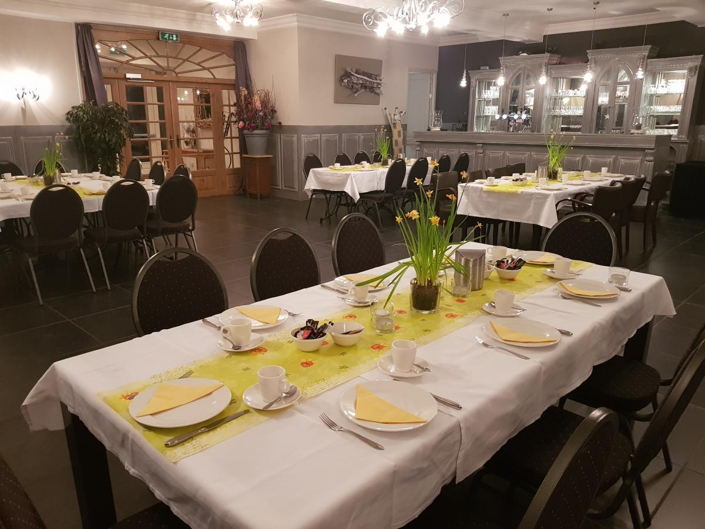
Iets te vieren?
Achter het restaurant ligt onze feest- en vergaderzaal voor groepen tot 125 personen. Voor verjaardagen, jubilea en andere feesten met dansvloer en een live DJ, of met een buffet dat we helemaal in overleg samenstellen.
Ook voor een vergadering, presentatie, receptie, cursusdag met lunch of borrel bent u welkom. Bij mooi weer gaat u zo naar buiten: het terras sluit direct aan op de zaal.
Bespreek uw feest of vergadering
Onder het genot van een kopje koffie bespreken we graag uw ideeën en wensen. Marjon en Atze helpen u met advies.
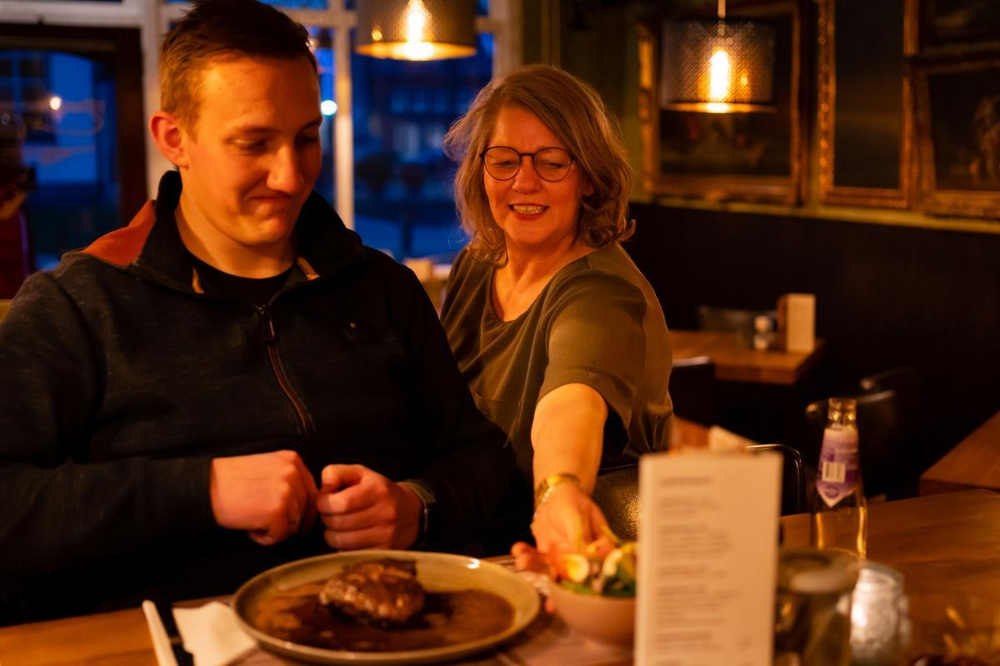
Welkom in de huiskamer
In het pand In den Veehandel, midden in het hart van Wouw, aan de markt tegenover de oude kerk, zit sinds 1 juli 2016 De Huiskamer van Wouw. Atze en Marjon Boersma zijn de eigenaren.
We hebben een gezellige bar, een knus restaurant, een voorterras met uitzicht op de markt en een besloten achterterras. Kom voor koffie met gebak, een lunch, een drankje met een hapje of een heerlijk diner.
Een kijkje binnen
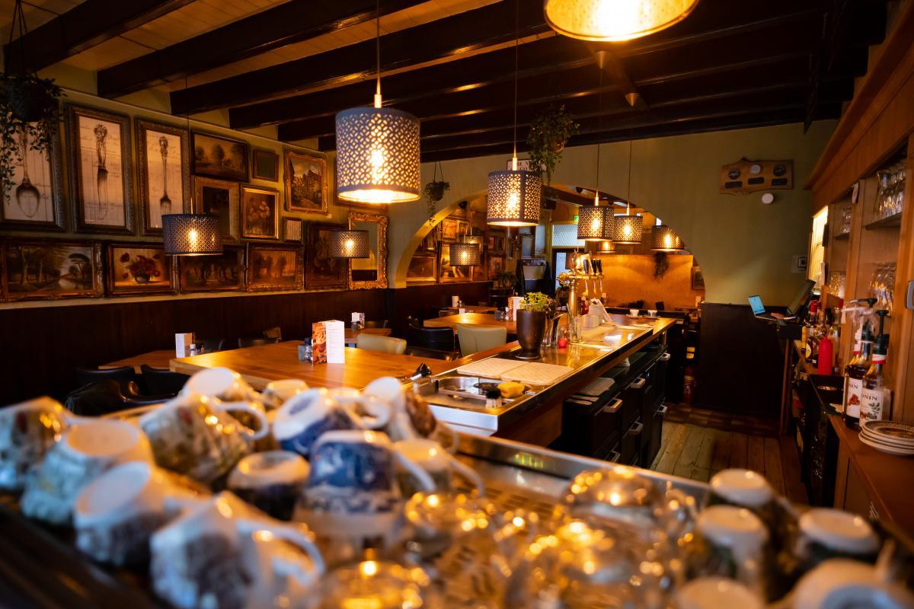
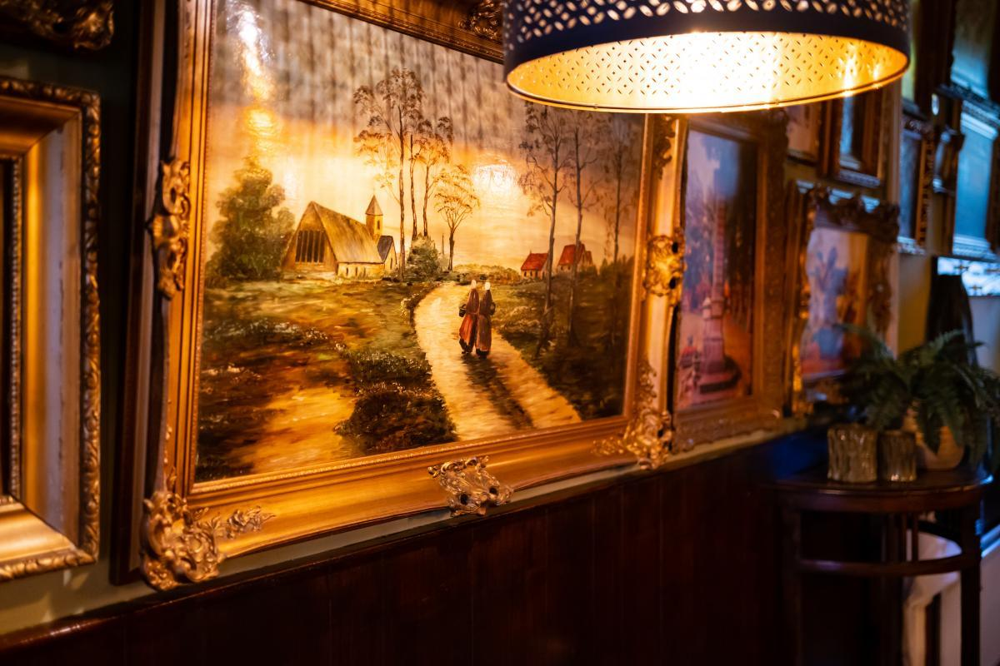
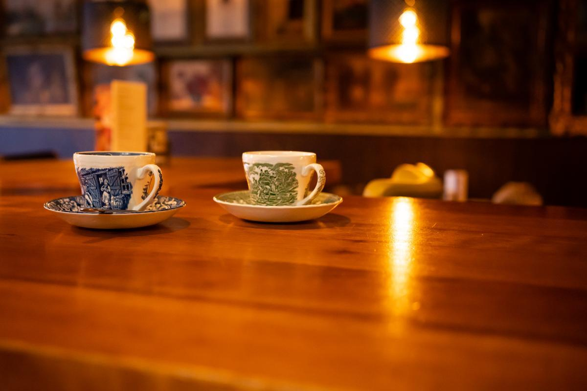
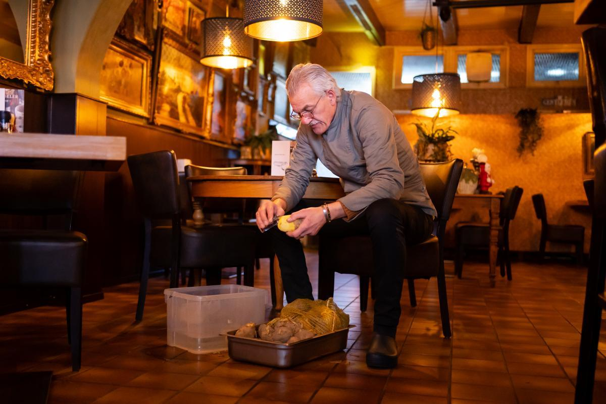
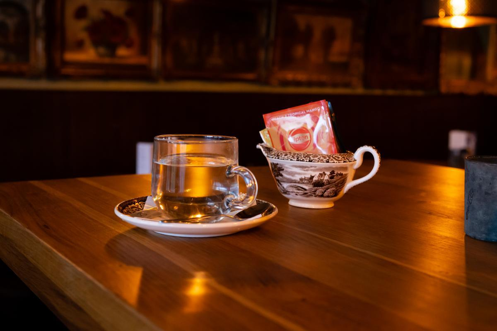
Reserveren
Reserveer een tafel
Reserveren kan telefonisch of via de mail. Komt u met een grotere groep? Bel ons even, dan zorgen we voor een mooie plek.